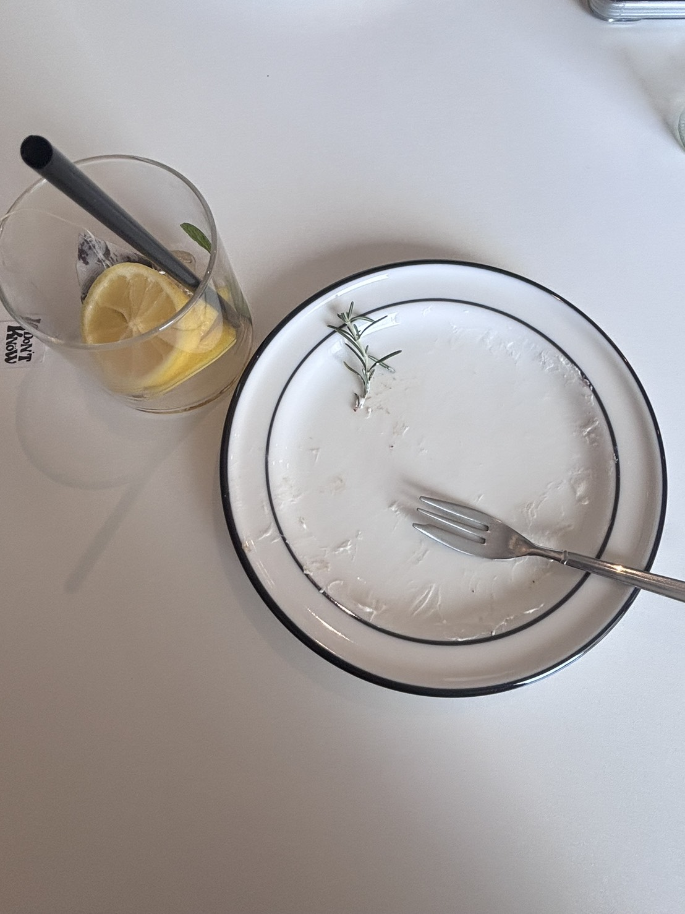
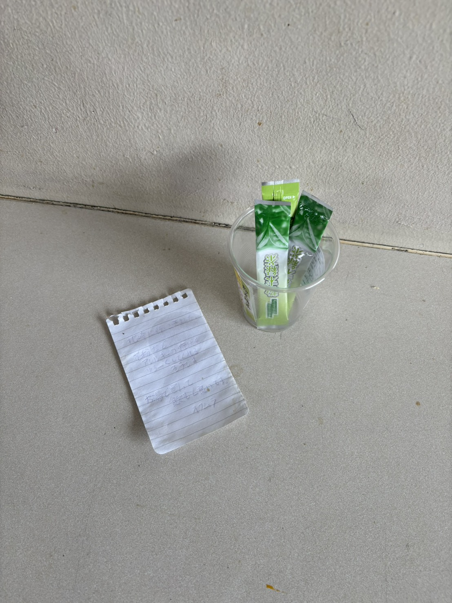
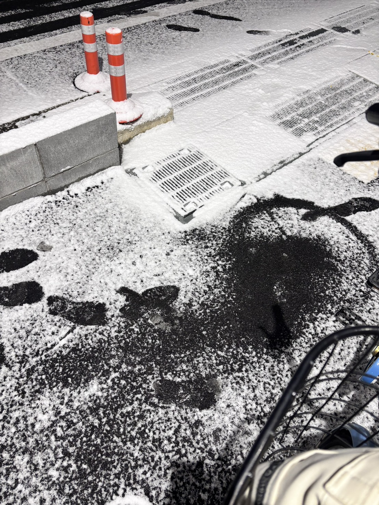
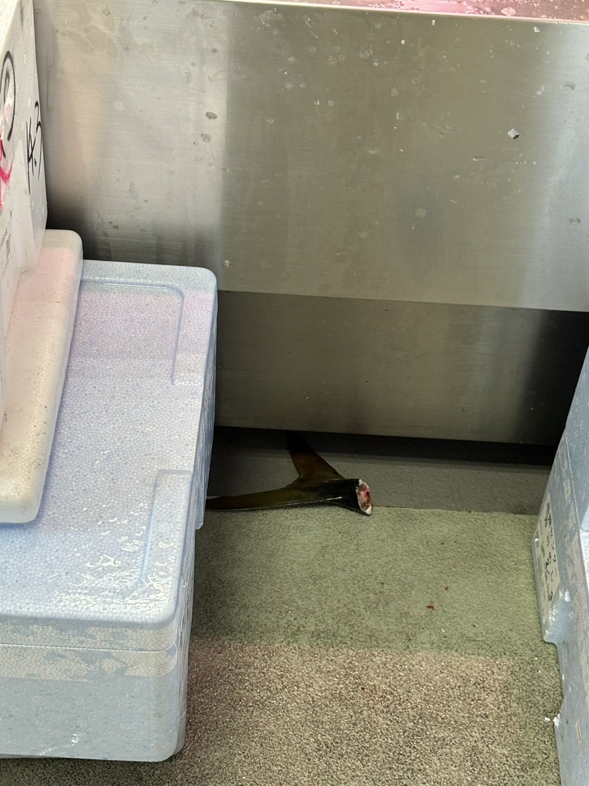
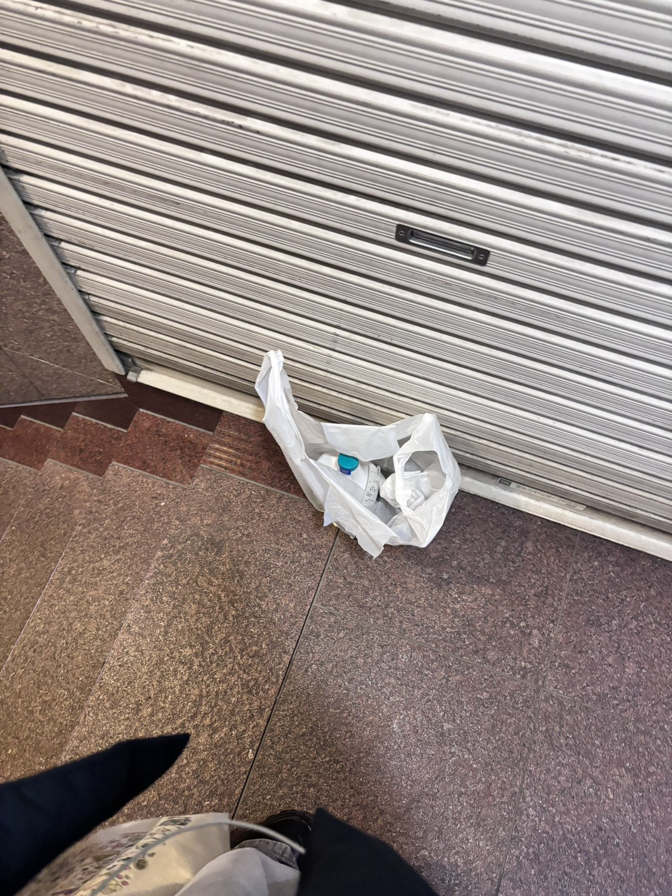

01 / SECONDS AGO

01 / A FEW MINUTES AGO

01 / RECENT FOOTSTEPS

01 / TONIGHT

01 / JUST FINISHED

01 / FLOWING TIME

01 / WARM INTENTION

02 / A FEW HOURS AGO

02 / THIS MORNING

02 / DURING THE DAY

02 / AFTER THE RAIN

02 / FADING TRACE

03 / ABANDONED

03 / LEFT BEHIND

03 / BIOLOGICAL TRACE

04 / YEARS OF ACCUMULATION

04 / ETERNAL TRACE

04 / FOSSILIZED PRESENCE